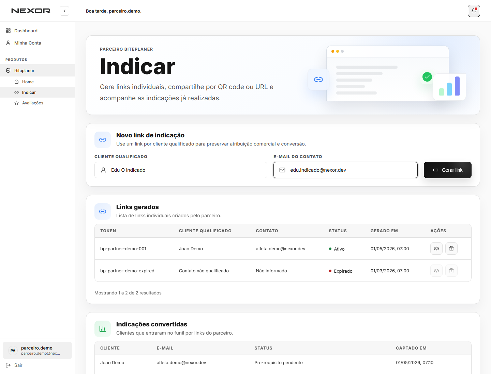
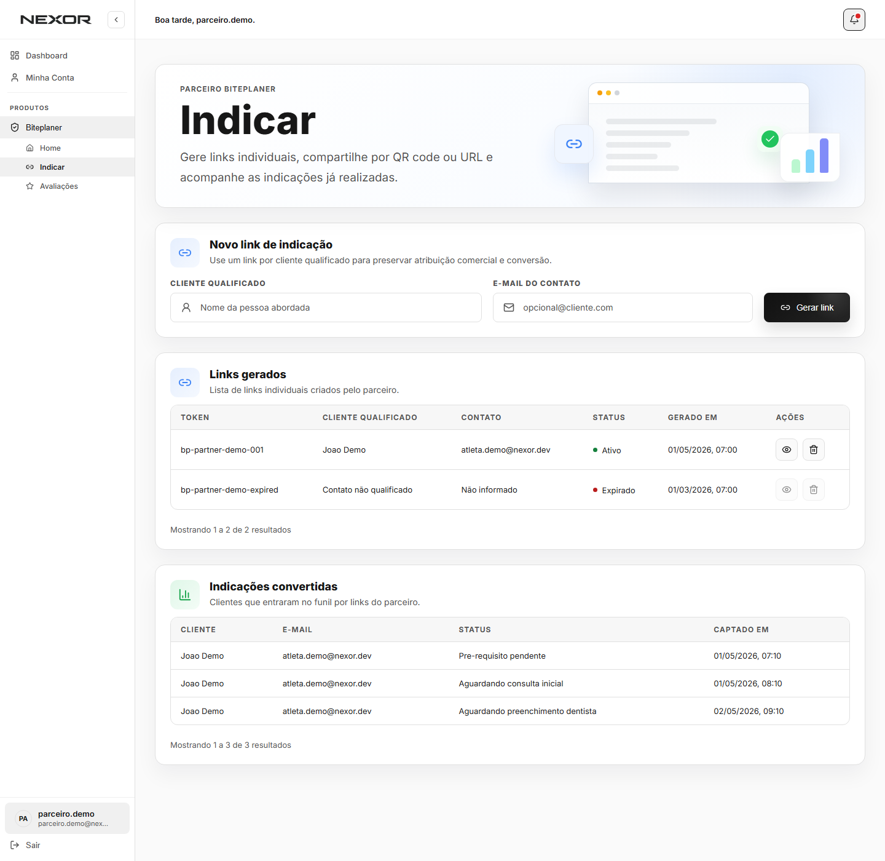
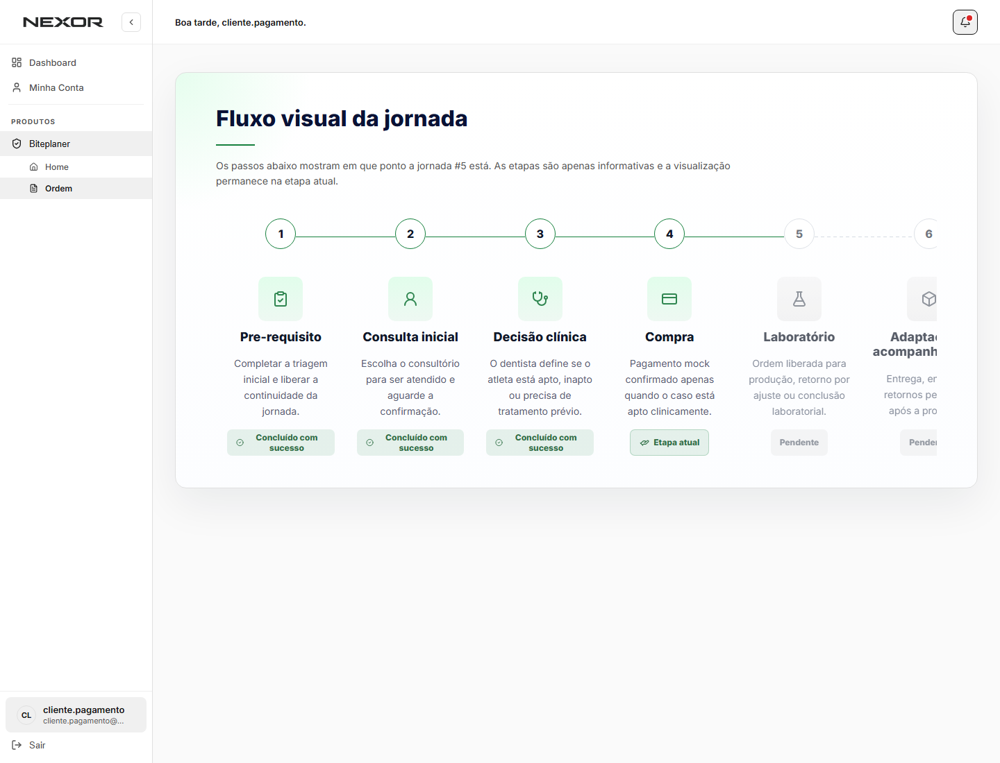

Pre-requisito
Conta, consentimentos, onboarding e triagens iniciais do produto.
Fluxo Biteplaner Nexor
Material para stakeholders acompanharem o fluxo real: indicação por parceiro, cadastro do cliente, onboarding, pré-consulta, decisão clínica, compra, produção com dentista e laboratório, inaptidão e reavaliação.
Toda tabela com coluna Etapa deve usar apenas estas seis labels. Status técnicos e ações internas não substituem a etapa da jornada do cliente.
Conta, consentimentos, onboarding e triagens iniciais do produto.
Cliente escolhe clínica e dentista aceita a consulta combinada.
Dentista revisa a pré-consulta e decide aptidão para o Biteplaner.
Cliente apto realiza o pagamento e aguarda confirmação.
Dentista envia produção e laboratório executa a confecção.
Retorno, adaptação do dispositivo e acompanhamento pós-entrega.
Nas etapas do cliente, o documento começa pelo Fluxo visual da jornada. Nas roles parceiro, dentista e laboratório, a leitura mostra diretamente os formulários, listagens de ordens e ações pertencentes à role.
As regras abaixo são as que mais impactam status, permissões e telas depois das últimas decisões de produto.
Exibir apenas “Inaptidão” para cliente e dentista. Não existe status de refund por inaptidão.
Cliente inapto pode voltar para Consulta inicial e escolher a mesma clínica ou outra clínica licenciada.
Se houver troca de dentista após inaptidão, o novo dentista deve preencher seu próprio complemento clínico.
Após a confirmação de pagamento, o sistema libera a solicitação de produção. O dentista não fica parado nesse status.
O parceiro gera um link individual e acompanha sua própria listagem de indicações. O cliente indicado acessa o convite, cria conta Nexor e segue a jornada do Biteplaner.

Campos principais: nome do indicado, e-mail, telefone, origem/parceiro e observações.

O parceiro confere os dados antes de gerar o convite individual.

Links inativos não podem ser compartilhados nem deletados. A ação fica disponível apenas para status Ativo.

Modal mostra nome do indicado, QR code, URL individual e ações de copiar, e-mail e WhatsApp.
O cliente indicado precisa ter conta Nexor para entrar na jornada. O convite deve preservar o vínculo com o parceiro de origem.

Conta simples com dados de acesso e vínculo do convite.

LGPD, termos e comunicações são coletados antes de liberar formulários sensíveis.
O onboarding coleta os dados de perfil, prática esportiva e objetivos. Stakeholders precisam enxergar todos os blocos de perguntas porque eles alimentam a pré-consulta e a jornada.

Sem aceite, o formulário sensível não fica disponível.
Depois do aceite, o cliente preenche dados pessoais, treino, saúde, perfil financeiro e objetivos. O conteúdo completo dos campos está detalhado logo abaixo para leitura dos stakeholders.
A pré-consulta é compartilhada: o cliente preenche a anamnese inicial e o dentista complementa após a consulta. O pagamento só nasce depois da decisão clínica positiva.

Dados iniciais, triagem e informações já registradas no cadastro para preparar a pré-consulta.

Dados clínicos, odontológicos, sintomas, hábitos e fatores de vida usados no cuidado.

O cliente informa histórico e sintomas antes da consulta inicial.
Pesquisa de satisfação e melhorias: satisfação com Nexor/Biteplaner, indicação, dúvidas, preocupações e sugestões abertas.
O sistema não agenda horário no lugar da clínica. Ele registra a escolha da clínica, a confirmação do cliente e o aceite operacional do dentista.

Quando o dentista marca inaptidão, o cliente vê a justificativa clínica e volta para Consulta inicial para escolher clínica/dentista novamente.

Cliente vê clínicas licenciadas, distância, endereço e indicação de acessibilidade/adaptação.
Se o cliente foi declarado inapto, a jornada volta para Consulta inicial. A clínica anterior pode vir pré-selecionada, mas o cliente pode escolher outra clínica. Se escolher outro dentista, esse novo dentista verá a etapa de anamnese para preencher o complemento da nova consulta.
Depois da consulta inicial, o dentista valida a anamnese, complementa os dados clínicos e decide se o cliente está apto para seguir para a compra.
A ordem fica com o dentista para revisão clínica e preenchimento do complemento obrigatório.
A jornada avança para Compra. O dentista para no Resumo anamnese até o pagamento ser confirmado.
A jornada volta para Consulta inicial, com a descrição clínica da inaptidão visível ao cliente.
O dentista responde “Cliente está apto para uso do Biteplaner?” com Sim ou Não. Ao marcar Não, a descrição da inaptidão se torna obrigatória e será exibida ao cliente no fluxo de nova consulta.
A tela de compra aparece apenas após aptidão clínica. O sucesso visual usa o retorno de pagamento, mas a liberação real vem da confirmação no backend.

Print atualizado da jornada do cliente no cenário de pagamento: a etapa Compra fica ativa e o cliente entende que o próximo passo depende da liberação operacional.

Print atualizado da tela real: card do pedido, stepper compacto, resumo financeiro e botão verde para iniciar o pagamento.

Ao voltar para /painel/compra?checkout=success, a tela exibe pagamento realizado, etapa atualizada e mensagens de sincronização com o backend.
Step 1: Aguardando pagamento pelo cliente. Steps 2 e 3 aparecem como pendentes.
Step 1 vira Pagamento confirmado em verde; Step 2 vira Aguardando produção.
Backend salva método, valor, desconto, recibo quando existir e avança a ordem para o dentista finalizar produção.
O dentista só prossegue para produção após o pagamento confirmado pelo backend. Antes disso, ao concluir o complemento clínico, a tela para no Resumo anamnese.

Fila operacional com pedidos, etapa/status e ações disponíveis conforme a situação da ordem.
Revisão de dados iniciais da avaliação compartilhada e complemento clínico do dentista.

Revisão dos dados clínicos, sintomas, hábitos e histórico odontológico/orofacial.

Decisão de aptidão, data da consulta, medidas clínicas e declaração profissional.
O laboratório recebe somente o necessário para fabricar o dispositivo e acompanhar a ordem enviada pelo dentista.

Fila de pedidos recebidos, dados operacionais e status de produção.
No fim da linha do tempo, a jornada mostra o retorno para adaptação, uso do produto e acompanhamento pós-entrega.

Etapa de retorno e adaptação do dispositivo.

Uso, avaliação e relatórios pós-entrega.
Depois da produção e adaptação, o produto coleta uso em treino/competição e avaliações entre cliente, dentista, laboratório, parceiro e influenciador.
Os perfis profissionais têm cadastro complementar dedicado e ficam pendentes de aprovação operacional antes de operar no Biteplaner.

Nome da empresa/parceiro, tipo de documento, CPF/CNPJ, tipo de parceiro, CEP, cidade, estado, endereço, complemento, locais de atuação e aceites.

Nome profissional, CRO, resumo profissional, clínica de atendimento, endereço, horários, telefone, clínica adaptada e aceites.

Nome do laboratório, CNPJ, resumo operacional, local operacional, endereço, horários, telefone e aceites.
Referência rápida para alinhar backend, frontend e documentação. A etapa é a jornada; o status técnico controla permissão e ações.
| Status técnico | Label para o usuário | Etapa exibida | Ação esperada |
|---|---|---|---|
prerequisite_pending | Pre-requisito pendente | Pre-requisito | Cliente completa dados iniciais. |
consultation_selection | Consulta inicial | Consulta inicial | Cliente escolhe clínica. |
awaiting_dentist_acceptance | Aguardando aceite do dentista | Consulta inicial | Dentista confirma a consulta combinada. |
awaiting_clinical_decision | Aguardando decisão clínica | Decisão clínica | Dentista preenche complemento clínico. |
ineligible_reassessment | Inaptidão | Consulta inicial | Cliente pode marcar nova consulta. |
awaiting_payment | Aguardando pagamento | Compra | Cliente paga o Biteplaner. |
payment_confirmed | Pagamento confirmado | Compra | Status transitório após confirmação de pagamento. |
awaiting_dentist_forms | Aguardando envio ao laboratório | Decisão clínica | Dentista finaliza produção. |
sent_to_lab | Enviado ao laboratório | Laboratório | Laboratório inicia produção. |
adaptation_pending | Adaptação pendente | Adaptação e acompanhamento | Dentista agenda retorno/adaptação. |
Mapa de ponta a ponta para visualizar os papéis, decisões clínicas e retornos possíveis sem depender de uma tela específica.
A ordem vai para Compra. A confirmação de pagamento é salva no backend e libera o dentista para finalizar a solicitação de produção.
O fluxo clínico atual é encerrado com justificativa visível ao cliente. A jornada volta para Consulta inicial, permitindo escolher a mesma clínica ou outra para uma nova avaliação.